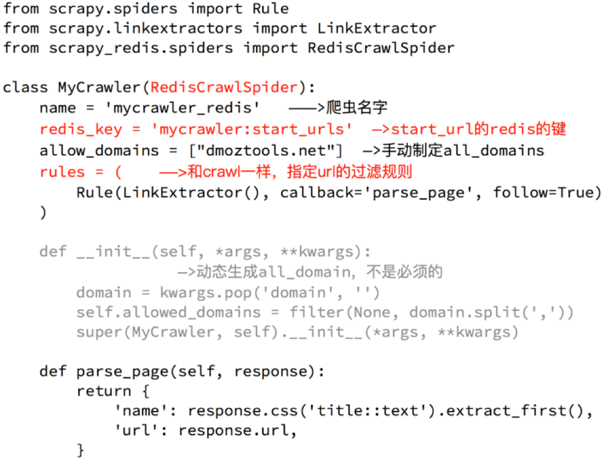

scrapy_redis实现分布式爬虫
目标
- 掌握scrapy_redis实现分布式爬虫的方法
- 掌握scrapy_redis中crawlspider类的分布式爬虫
1. RedisSpider
1.1 分析demo中代码
通过观察代码：
- 继承自父类为RedisSpider
- 增加了一个redis_key的键，没有start_urls，因为分布式中，如果每台电脑都请求一次start_url就会重复
- 多了
__init__方法，该方法不是必须的，可以手动指定allow_domains

1.2 动手实现当当图书爬虫
- 需求：抓取当当图书的信息
- 目标：抓取当当图书又有图书的名字、封面图片地址、图书url地址、作者、出版社、出版时间、价格、图书所属大分类、图书所属小的分类、分类的url地址
- url：http://book.dangdang.com
思路分析：
程序的入口
当当图书中，从大分类入手，还有一个中间分类，以及小分类，小分类对一个的地址就是列表页的地址
注意，url地址的响应和elements略微不同，其中不是每个大分类都在a标签中，中间部分分类不在span标签中

确定列表页的url地址和程序终止条件
存在下一页

不存在下一页

确定数据的位置
数据都在url地址对应的响应中，包括列表

完善spider
可以使用scrapy的方式创建爬虫，只需要把父类进行修改，添加redis_key
同时在settings.py中进行配置
2. RedisCrawlSpider
2.1 分析demo中的代码
和scrapy中的crawlspider的区别在于，继承自的父类不想听，redis_key需要添加

2.2 动手完成亚马逊图书爬虫
- 需求：抓取亚马逊图书的信息
- 目标：抓取亚马逊图书又有图书的名字、封面图片地址、图书url地址、作者、出版社、出版时间、价格、图书所属大分类、图书所属小的分类、分类的url地址
- url：https://www.amazon.cn/%E5%9B%BE%E4%B9%A6/b/ref=sd_allcat_books_l1?ie=UTF8&node=658390051
思路分析：
确定rule中的规则
可以通过连接提取器中的restrict_xpath来实现url地址的，不需要定位到具体的url地址字符串，定位到准确的标签位置即可
注意：定位到的标签中不能包含不相关的url，否则请求不相关的地址后，数据提取会报错
通过分析大分类和小分类的url地址，发现他们的规则仙童，即一个Rule可以实现从大分类到小分类的到列表页的过程
大分类url地址

小分类url地址

列表页翻页的url地址位置

进入详情页翻页的url地址位置
详情页在h2标签的上一级，定位到h2后，通过
..即可实现获取该url
详情页数据的抓取
在详情页中，数据有两种，一种是电子书的信息，一种是纸质书的信息，两种页面，数据位置不同
确定书的分类，是电纸书还是纸质书
电子书

纸质书

不同类型的书籍分别写xpath，比如价格的提取
在settings中进行配置
小结
- 本小结重点
- 掌握scrapy_redis中RedisSPider实现分布式爬虫的方法
- 掌握scrapy_redis中RedisCrawlspider类实现分布式爬虫的方法